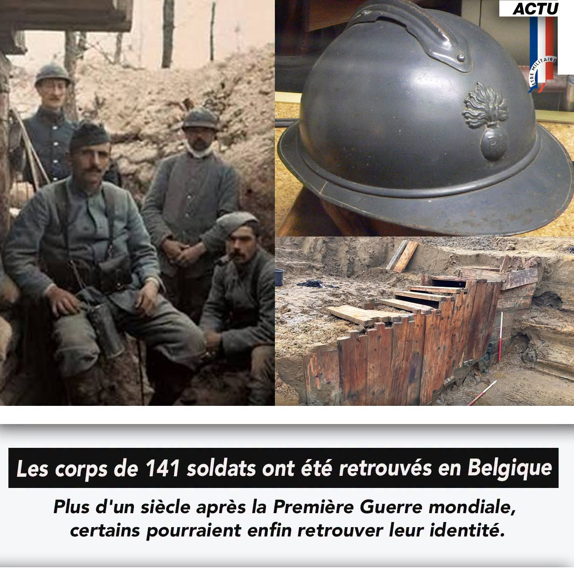

Publié le 11/11/2026

En Belgique, à Ypres, les dépouilles d'au moins 141 militaires de la Première Guerre mondiale ont été retrouvées lors de fouilles archéologiques.
Pendant un an et demi, des archéologues ont exploré un ancien champ de bataille situé sur le terrain d'un golf en cours d'agrandissement.
Ils y ont découvert les restes de soldats français, allemands et probablement britanniques, ainsi que des milliers de traces laissées par les combats.
Parmi les découvertes : une tranchée française de 1914 remarquablement conservée, des tunnels allemands, des armes et de nombreux objets personnels. Un sabre d'officier français et un fusil Lebel ont notamment été retrouvés.
Mais au-delà de ces vestiges, ce sont surtout 141 hommes dont les restes ont été exhumés, plus d'un siècle après leur disparition.
Les spécialistes poursuivent leurs recherches pour tenter de déterminer leur identité. Tous doivent recevoir une sépulture digne.
À quelques jours du 11 Novembre, cette découverte nous rappelle combien de soldats de la Grande Guerre reposent encore loin de chez eux, parfois sans que leurs familles aient jamais su où ils étaient tombés.
Une pensée pour ces hommes et pour toutes les générations qui continuent de faire vivre leur mémoire.
(Article de RTL info )
Les commentaires sont soumis à modération et doivent être approuvés avant publication.